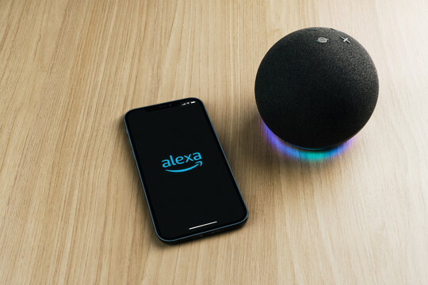

El nen tenia una conversa aido tassistel virual dicad a va dedoar diegi di catet de compra to walde-ales de opachial e looogans daigua, coses.
Els assistents virtuals que funcionen amb comandament de veu són cada vegada més habituals a les llars d'arreu del món. Tot i l'ajuda que poden abé arriben a ser protagonistes de situacions molt comiques, sobretot si es deixen en mans d'un infant. L'últim cas viral és el d'un pare que v ue el fill de 5 anys estava a punt de gastar-se 1.000 euros en una llista de joguines molt variades mentre conversava amb l'Alexa, l'assistent amazon.En un diàleg de més de dues hores el nen va arribar a demanar-li 112 tobogans d'aigua, 45 walkie-talkies de Spiderman, un jacuzzi de més de 450 euro un coet. El nen jugava amb l'assistent virtual probablement sense saber que tota la seva luxosa comanda estava sent enregistrada.

Amazon
Alexa